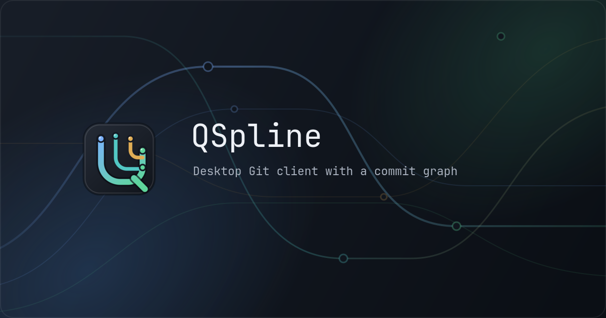

Commit graph
Branch lanes, refs, merge structure, collapsed sides, filters, path search, and comparisons share stable commit identities.
QSpline for Linux, macOS, and Windows
QSpline keeps history, changes, repository state, and commit details in one pane-based window. It calls the Git installed on your computer and records the commands it runs.
Current build
Branch lanes, refs, merge structure, collapsed sides, filters, path search, and comparisons share stable commit identities.
Review staged and unstaged files, select lines or hunks, switch between unified and side-by-side diffs, and write the commit without leaving the window.
Create and manage branches, merge, rebase, cherry-pick, revert, tag, stash, and work with reflog or file history.
Repository state remains visible during merges and rebases. The conflict editor shows ours, theirs, and the editable result.
Open, clone, initialize, and manage more than one repository. Fetch, pull, push, and remote operations run in background workers.
QSpline uses installed Git. The activity panel records each command and bounded output, with credentials removed before anything reaches the interface.
Lists, panes, menus, graph movement, staging, and the command palette have keyboard paths and visible focus.
Repositories stay on your computer. QSpline has light and dark themes and does not require an account or send analytics.
Pane-based workspace
The layout keeps repository state and the current operation visible. Panes can be resized to make room for the files, graph, or diff.

v1 platforms
Each release publishes exact checksums and an Ed25519-signed manifest. The supported floor includes Git 2.39.
glibc 2.35
AppImage, DEB, RPM, portable archivemacOS 13
Signed and notarized DMGWindows 10 1809
Signed MSI installerQSpline v1 publishes Linux x86_64, macOS arm64, and Windows x64. You can build from source or follow the release feed.